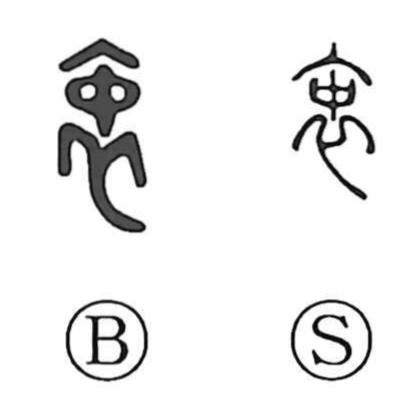

衷

Kun: | On: chuu
heart ・ sincerity ・ innermost feelings
Explanation
A phono-semantic character formed with 衣, “garment,” indicating clothing, and 中, “inside,” which also supplies the on reading chuu. In the Shuowen it names the innerwear worn next to the skin, and the Zuo Zhuan speaks of 衷甲, armor worn beneath one’s outer clothes. From this concrete image of what is hidden under a garment, the character came to express the inner mind and true sincerity that do not show outwardly, as in 衷心, 衷情, and 衷誠. By the same sense of “the inside” or “the middle,” 衷 can also substitute for 中 in compounds like 折衷, the balanced reconciliation that selects the best from both sides.